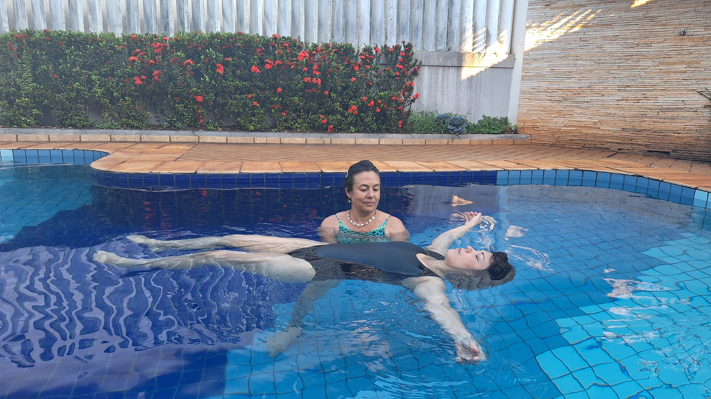
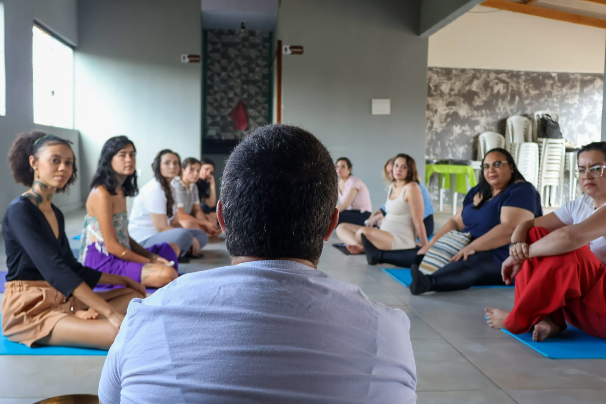
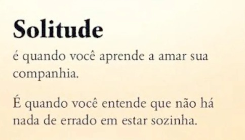
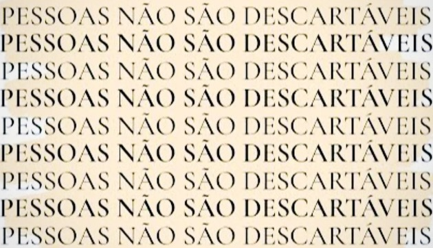
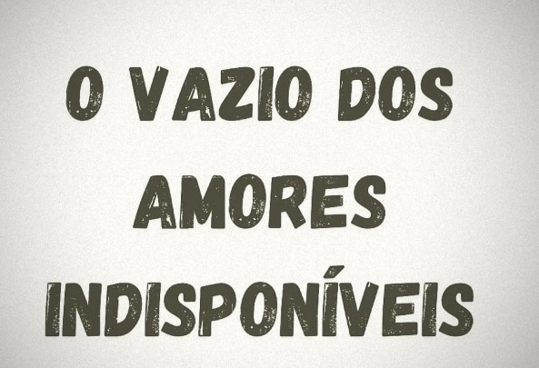

Eneida Feijó
Psicóloga Humanista com foco na Logoterapia e no Sentido da Vida.
CRP
08/40518
Sobre mim
Sou psicóloga humanista, dedicada a auxiliar pessoas a encontrarem sentido em suas vidas e superarem angústias através do autoconhecimento e de um acolhimento terapêutico genuíno. Acredito que, por mais difíceis que sejam as circunstâncias, sempre há espaço para a liberdade de escolha e para a construção de uma vida com propósito.
Eventos Concluídos
Momentos de profunda conexão e cura que já vivenciamos em grupo.

2ª Tarde de Imersão: Somos Água
Uma vivência de fluidez e cura através da meditação e terapia aquática, acompanhada das condutoras Gislene Gaion e Carla Santos.
Ver Fotos do Evento
1ª Tarde de Imersão
Um mergulho profundo dentro de si. Nosso primeiro encontro presencial voltado para o autoconhecimento, musicoterapia e descompressão.
Ver Fotos do EventoPróxima Imersão
3ª Tarde de Imersão: A cura que vem da terra
Um convite para desacelerar, enraizar e liberar o que já não precisa ser carregado. Vagas limitadas!
Garantir minha vaga
Depoimentos
Feedbacks de quem já participou de nossas vivências e atendimentos.
"A tarde de imersão com a Dra. Eneida foi uma experiência incrível para mim. Gostei muito da musicoterapia, que realmente traz paz para a mente e para o corpo."
"A imersão foi incrível, a proposta de mergulho me levou para lugares desconhecidos dentro de mim. Todos os momentos foram de muito acolhimento e amor."
"A tarde de imersão foi uma surpresa muito positiva para mim. Fiquei satisfeita e grata com o autocuidado que me proporcionei."
"Foi uma tarde revigorante. A prática do Watsu foi algo que nunca tinha experimentado, uma sensação de leveza total."
"Sair da rotina e conectar com a água foi essencial para meu final de ano. Gratidão Eneida!"
Publicações Recentes
Reflexões sobre saúde mental, logoterapia e os desafios do cotidiano.

Sobre a Solitude
É quando você aprende a amar a sua companhia e entende que não há nada de errado em estar sozinha.
Ler no Instagram
Vínculos Reais
Pessoas não são descartáveis. Vivemos em uma era líquida, mas a responsabilidade afetiva nunca sai de moda.
Ler no Instagram
Amores Indisponíveis
O vazio provocado por se apegar a relações onde não há espaço e disponibilidade emocional genuína.
Ler no Instagram